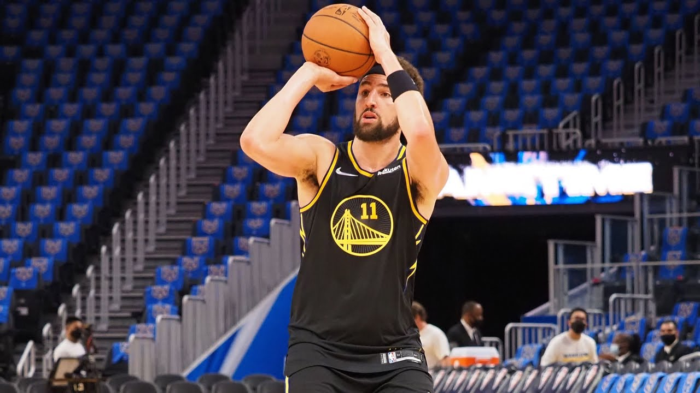
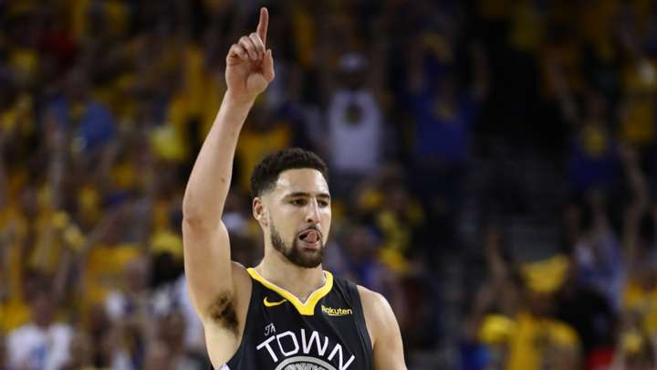

¿Cuándo regresa Klay Thompson de su lesión? Las últimas noticias del jugador de Golden State Warriors
Aquí está todo lo que se sabe sobre la lesión de la estrella de Golden State Warriors así como las últimas novedades acerca de cuándo podrá regresar a la cancha.
Los fanáticos de Golden State Warriors no deben esperar mucho para ver el muy esperado regreso de su "Big Three". Klay Thompson, cinco veces All-Star, volverá a las canchas en esta campaña luego de perderse las temporadas 2019-2020 y 2020-2021. Terminar su recuperación igualmente le lleva tiempo, algo que no sorprende teniendo en cuenta que no participa de un partido NBA desde junio de 2019.
¿Qué se viene para Thompson? A continuación todo lo que conocemos sobre su lesión y las últimas noticias sobre cuando puede regresar a jugar.
¿Cuál es la lesión de Klay Thompson?
hompson estaba en proceso de recuperación luego de perderse la temporada 2019-2020 por completo al haberse roto el ligamento cruzado anterior de su rodilla izquierda. Entonces, en noviembre de 2020, sufrió una lesión en una pierna en un entrenamiento de pretemporada en California. Los peores miedos de los Warriors se hicieron realidad cuando se confirmó que Thompson se rompió el tendón de aquiles de su pie derecho.
El 25 de noviembre de 2020 los Warriors anunciaron que Thompson atravesó una cirugía exitosa para reparar ese tendón de aquiles.
¿Cuándo regresa Klay Thompson?
En la edición del podcast "Brian Windhorst & The Hoop Collective" del 16 de noviembre, el periodista de ESPN Nick Friedell dijo que Thompson podría regresar antes de Navidad y manifestó que él está cerca de participar en entrenamientos de 5 vs. 5. Friedell cree que Thompson podría estar de nuevo en cancha para el partido del 20 de diciembre ante Sacramento Kings o el del 23 de diciembre ante Memphis Grizzlies, dos partidos que Golden State jugará en casa.
"Estaría sorprendido si no es en alguno de esos partidos como local, a menos que haya algún contratiempo en el próximo mes de los que sabemos que pueden suceder con este tipo de lesiones", dijo Friedell. "Tienen un par de partidos justo antes de Navidad y luego un partido contra Denver en casa luego de Navidad. Estaría sorprendido si Klay no juega en alguno de esos encuentros porque, en lo poco que hemos visto de él entrenando, ya parece él mismo"
Durante un episodio de "The Jump" en agosto, Ramona Shelburne de ESPN reportó que los Warriors tenían el partido de Navidad contra Phoenix Suns como fecha objetivo para el regreso de Thompson. Eso significaría unos 13 meses fuera desde su lesión en el aquiles.
"Mucho de esto se trata por reacondicionamiento físico", dijo Shelburne. "Klay lo está haciendo bien en su recuperación, pero ya se perdió dos temporadas consecutivas así que no quieres apurarlo. Este es un objetivo conservador. Si él está bien y siente que puede regresar antes, lo hará", agregó.